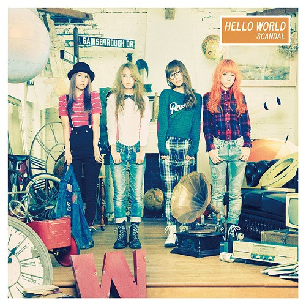

Albums de Scandal
"BEST SCANDAL"
Tracklist:
1. Scandal Baby
2. Shoujyo S
3. Doll
4. Koimoyou
5. Yumemiru Tsubasa
6. Anata Ga Mawaru
7. Space Ranger
8. Ring!Ring!Ring!
9. Maboroshi Night
10. Kimi To Yoru To Namida
11. Hitotsudake
12. Sakura Good Bye
13. Kagerou
"Queens Are Trumps: Kirifuda wa Queen"
Tracklist:
1. Queens Are Trumps
2. Taiyou Scandalous
3. Pinheel Surfer
4. Rock'n Roll
5. Bitter Chocolate
6. Kill The Virgin
7. Koe
8. Rising Star
9. Bright
10. Welcome Home
11. Harukaze
12. Right Here
"Yellow"
Tracklist:
1. Room No.7
2. Stamp!
3. Love Me Do
4. Morning Sun
5. Sunday Drive
6. Konyawa Pizza Party
7. Heaven Na Kibun
8. Suki Suki
9. Love
10. Sisters
11. Happy Birthday
12. Chiisana Honoo
13. Your Song (English Version)
"Honey"
Tracklist:
1. Platform Syndrome
2. Over
3. Take Me Out
4. Oh! No!
5. Midnight City
6. Short Short
7. Mado Wo Aketara
8. Futari
9. Electric Girl
10. Koisuru Universe
"Hello World"
 Tracklist:
1. Image
2. Your Song
3. Love In Action
4. Departure
5. Graduation
6. Yoake No Ryuseigun
7. Onegai Nabigeshon
8. Runners high
9. Honn Wo Yomu
10. Kan Biiru
11. Winter Story
12. Oyasumi
13. Place of life
"Kiss From The Darkness"

Tracklist:
1. Tonight
2. Masterpiece
3. Fuzzy
4. Saishuheiki Kimi
5. Laundry Laundry
6. NEON TOWN ESCAPE
7. Ceramic Blue
8. Kinenbi
9. Mabataki
10. A.M.D.K.J.
11. Tsuki